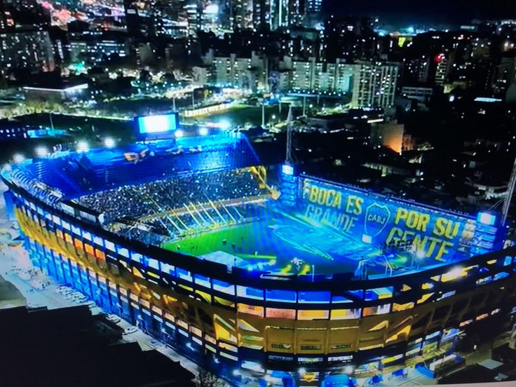

Historia de boca juniros
Boca Juniors fue fundado el 3 de abril de 1905 en el barriuo de la boca, Buenos Aires. Es uno de los clubes mas importantes y populares del futbol argentino
Boca Juniors fue fundado el 3 de abril de 1905 en el barriuo de la boca, Buenos Aires. Es uno de los clubes mas importantes y populares del futbol argentino

La Bombonera es el estadio de Boca Juniors- Esta ubicado en el barrio de la boca y es conocido por su gran ambiente y por la pasion de sus hinchas